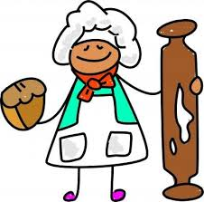

 |
How to make cookies |
Step 1: |
First preheat the oven |
Step 2: |
Then grab all your neccessary ingredients. |
Step 3: |
After that mix all of it together. |
Step 4: |
Then make some balls out of the dough and place it on the pan. |
Step 5: |
Next put the pan in the oven for it to cook. |
Step 6: |
Finally take it out and eat it! |